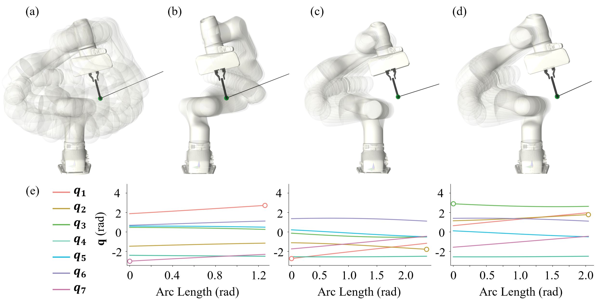
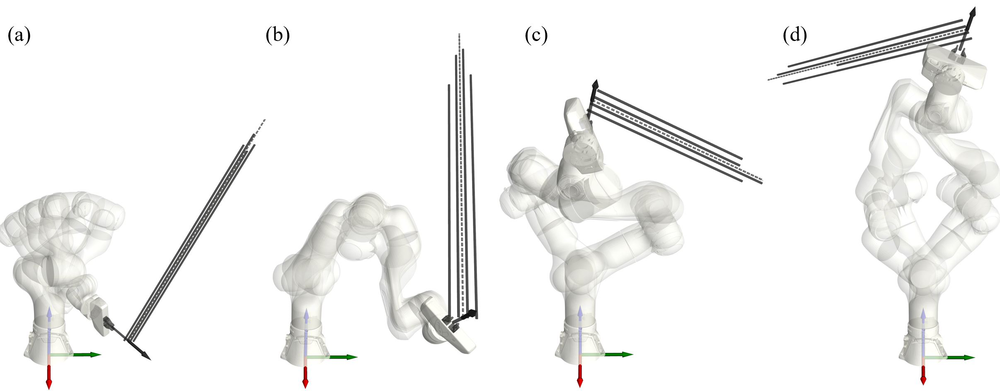
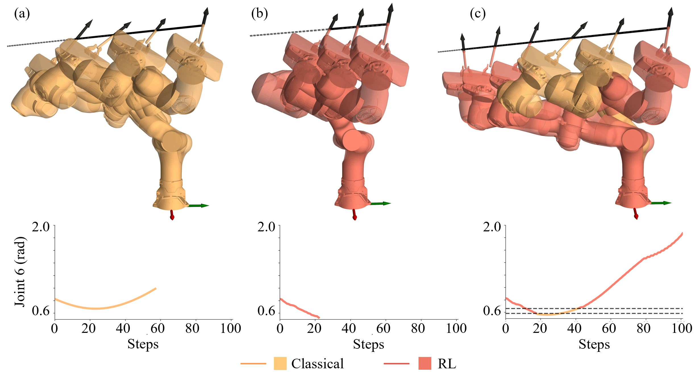
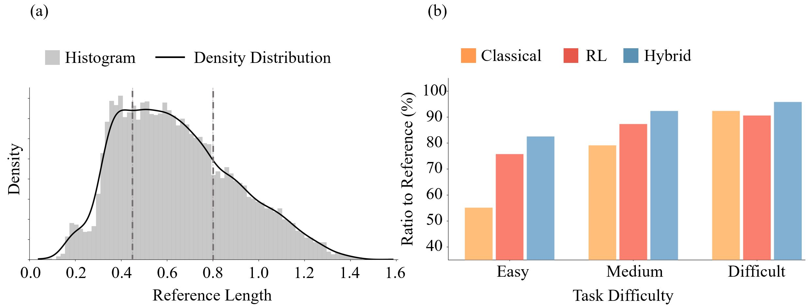

Extreme Motion Generation via Hybrid Null-Space Control for Straight-Line Path Following
Demonstration 1
Classical
RL
Proposed (Simulation)
Proposed (Real Robot)
Demonstration 2
Classical
RL
Proposed (Simulation)
Proposed (Real Robot)
More Demonstrations
For each demonstration, the top row compares the Classical and RL controllers, and the bottom row shows our proposed controller in simulation and on the real Franka FR3. More Demonstrations shows additional rollouts of the proposed method.
Abstract
This work studies extreme motion generation, which aims to maximize the Cartesian path length along a pre-defined trajectory within the manipulator's workspace. This objective is important in industry as long as path-following is fundamental to a large variety of tasks such as surface coating and welding. More critically, extreme motion enables a fixed-base manipulator to exploit the kinematic capability under limited reachability. However, such exploitation is challenging in practice, as the manipulator must actively avoid the safety boundary through execution, which is inherently a long-horizon problem. Accordingly, we claim that long-horizon decision-making should be delegated to a learning-based policy to maximize exploitation, while a classical model-based controller covers the near-boundary region, where the learning policy degrades sharply due to sparse data coverage. In detail, our proposed method is a step-level hybrid controller that switches between an RL-based and a model-based controller according to the normalized joint-limit distance. The initial joint configuration is sampled through conditional diffusion-based sampling, which improves the achievable path length based on the learned motion prior. We evaluate the proposed framework on 10,000 straight-line path-following tasks with a 7-DoF Franka FR3, extending the average rollout length by 27% over the model-based baseline. Notably, certain tasks yield a pronounced extension toward the motion extreme, as reflected in the maximum improvement reported in the statistical results.
Why the Initial Configuration Matters

Self-motion manifold (SMM) for a fixed end-effector pose. (a) the continuous manifold without joint-limit constraints; (b–d) configurations from the disconnected branches induced by the joint limits — they share the same pose but differ sharply in joint space and in reachable path length. (e) joint trajectories of the three branches along the arc length, with circles marking the joint that first reaches its limit. The achievable path length is therefore largely decided, before any motion begins, by which branch the initial configuration lies on.
Multi-Modal Initial Configuration Sampling

Multi-modal initial configurations sampled by the conditional diffusion model on representative tasks (a–d). Unlike branch-bound heuristic seeds, the learned prior spans multiple SMM branches and reaches more favorable starting configurations, leading both heuristic seeds by 10–18 pp at a comparable seed-generation cost (∼45 ms). The dashed grey line denotes the actual motion direction; the solid lines are laterally offset for clearer visualization.
Hybrid Control Extends Motion Toward the Extreme

Representative rollout comparing the three controllers: the executed motion (top) and the Joint 6 trajectory (bottom), where the dashed grey lines mark the τenter/τexit thresholds mapped to the Joint 6 limit. (a) the classical controller and (b) the RL controller each terminate early as Joint 6 drifts toward its limit. (c) the hybrid controller hands control to the classical controller near the threshold and back to RL in the interior (color denotes the active controller), keeping Joint 6 within bounds and advancing the end-effector far further along the path.
Performance Across Task Difficulty

(a) Distribution of the per-task reference length ℓref over the 10,000 evaluation tasks; the dashed grey lines mark the Easy / Medium / Difficult thresholds. (b) ratio of the achieved path length to the reference across difficulty levels. Hybrid attains the best of the three in every bucket; the foresight advantage of RL over Classical is largest on Easy and Medium tasks where an interior margin remains, and shrinks to a tie on Difficult tasks near the boundary — precisely the regime the classical controller is designed to handle.